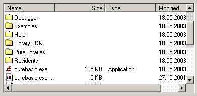

ExplorerListGadget()
Syntax
Result = ExplorerListGadget(#Gadget, x, y, Width, Height, Directory$, [, Flags])Description
Creates a listing of a directory just as Explorer does. It lets the user choose a file or a folder and (if you do not prevent it by a flag) navigate through the whole directory tree.
Parameters
#Gadget A number to identify the new gadget. #PB_Any can be used to auto-generate this number. x, y, Width, Height The position and dimensions of the new gadget. Directory$ The initial displayed directory, it can include one or multiple patterns, like "C:\*.pb;*.pbi". If no pattern is included, the directory must end with a '\'. Including no directory will display the root containing the drives. Including no pattern defaults to '*.*'. So a Directory$ of "" will display the root and set '*.*' as pattern. Flags (optional) Flags to modify the gadget behavior. It can be a combination of the following values: #PB_Explorer_BorderLess : Create Gadget without borders. #PB_Explorer_AlwaysShowSelection : The selection is visible, even when the gadget is not activated. #PB_Explorer_MultiSelect : Enable multiple selection of items in the gadget. #PB_Explorer_GridLines : Display separator lines between rows and columns. #PB_Explorer_HeaderDragDrop : In report view, the headers can be changed by Drag'n'Drop. #PB_Explorer_FullRowSelect : The selection covers the full row instead of the first column. #PB_Explorer_NoFiles : No files will be displayed. #PB_Explorer_NoFolders : No folders will be displayed. #PB_Explorer_NoParentFolder : There will be no [..] link to the parent folder. #PB_Explorer_NoDirectoryChange : The directory cannot be changed by the user. #PB_Explorer_NoDriveRequester : There will be no 'please insert drive X:' displayed. #PB_Explorer_NoSort : The user cannot sort the content by clicking on a column header. #PB_Explorer_NoMyDocuments : The 'My Documents' Folder will not be displayed as a separate item. #PB_Explorer_AutoSort : The content will be sorted automatically by name. #PB_Explorer_HiddenFiles : Will display hidden files as well (supported on Linux and OS X only).
Return value
Returns nonzero on success and zero on failure. If #PB_Any was used as the #Gadget parameter then the return-value is the auto-generated gadget number on success.
Remarks
A 'mini help' can be added to this gadget using GadgetToolTip().
The following functions can be used to control the gadget:
- AddGadgetColumn(): Add a new automatically or custom filled column to the gadget. See the AddGadgetColumn() function help for more details.
- RemoveGadgetColumn(): Remove a column from the gadget.
- GetGadgetText(): Get the currently displayed directory.
- SetGadgetText(): Changes the currently displayed directory, or the current pattern for files.
- GetGadgetState(): Get the first selected item (-1 if none selected).
- GetGadgetItemText(): Get the name of an item (or column header, if item = -1).
- SetGadgetItemText(): Alter the contents of any items text (or column header, if item = -1), or fill a custom column with data.
- GetGadgetItemState(): Check if an item is a directory or a file, and if it is currently selected.
- SetGadgetItemState(): Change selected state of the specified item.
- CountGadgetItems(): Count the items in the current directory.
- GetGadgetAttribute() / SetGadgetAttribute(): With the following attribute:#PB_Explorer_DisplayMode : Changes the display of the gadget. Can be one of the following constants: #PB_Explorer_LargeIcon: Large icon mode #PB_Explorer_SmallIcon: Small icon mode #PB_Explorer_List : List icon mode #PB_Explorer_Report : Report mode (columns, default mode)
- GetGadgetItemAttribute() / SetGadgetItemAttribute(): With the following attribute:#PB_Explorer_ColumnWidth : Returns/Changes the width of the given 'Column'. The 'Item' parameter is ignored.
This gadget supports the SetGadgetColor() and GetGadgetColor() functions with the following values as 'ColorType':#PB_Gadget_FrontColor: Textcolor #PB_Gadget_BackColor : Backgroundcolor #PB_Gadget_LineColor : Color for the gridlines if the #PB_Explorer_GridLines flag is used.ExplorerListGadget() supports the following events reported by EventType():#PB_EventType_Change : The selection or the current displayed directory has changed. #PB_EventType_LeftClick : User clicked on an item with the left mouse button. #PB_EventType_RightClick : User clicked on an item with the right mouse button. #PB_EventType_LeftDoubleClick : User double-clicked on an item with the left mouse button. #PB_EventType_RightDoubleClick : User double-clicked on an item with the right mouse button. #PB_EventType_DragStart : User tried to start a Drag & Drop operation.After a #PB_EventType_DragStart event, the Drag & Drop library can be used to start a Drag & Drop operation.
Example
If OpenWindow(0, 0, 0, 400, 200, "ExplorerListGadget", #PB_Window_SystemMenu | #PB_Window_ScreenCentered) ExplorerListGadget(0, 10, 10, 380, 180, "*.*", #PB_Explorer_MultiSelect) Repeat : Until WaitWindowEvent() = #PB_Event_CloseWindow EndIf
See Also
AddGadgetColumn(), RemoveGadgetColumn(), GetGadgetText(), SetGadgetText(), GetGadgetState(), GetGadgetItemState(), GetGadgetItemText(), SetGadgetItemText(), CountGadgetItems(), GetGadgetAttribute(), SetGadgetAttribute(), GetGadgetItemAttribute(), SetGadgetItemAttribute(),SetGadgetColor(), SetGadgetItemState(), GetGadgetColor(), ExplorerComboGadget(), ExplorerTreeGadget(), ListIconGadget()
Supported OS
All